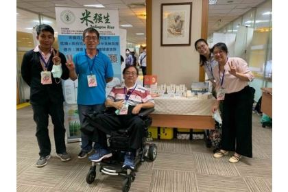

【公關組】興大植物教學醫院與烏日區農會合作開設肥料基礎課程
植物生長過程中，除了常聽到的氮磷鉀外，次要及微量元素也是不可或缺的因子，早期的農業操作中較少聽到次要及微量元素的缺失，但因大環境的改變、集約且連續的耕作模式、肥料超量的施用以及不適當的人為操作管理，導致因次要及微量元素缺失造成的植物生長不良情況日益增加。
烏日區農會與興大植物教學醫院合辦肥料基礎課程，邀請興大植物教學醫院駐診醫師吳正宗老師擔任講師，及陳興宗醫師一起參與課後論。主講農友普遍不熟悉之肥料課程。因次要及微量元素的缺失症狀，易與大量元素缺失症狀混淆，吳正宗老師以自身豐富實務經驗，配合精美照片，向農友解說如何正確診斷肥料造成的作物生長不良。
課後更由兩位醫師提供課程討論與諮詢服務。此次課程不僅烏日地區農友受惠，更有台中大甲及彰化田尾農友遠道而來取經，從課中及課後的討論中獲益良多。

【媒體報導】中興大學搭低GI風潮 開發台灣首宗蓬萊低升糖米
低GI（升糖指數）飲食當道，研究稻米逾20年的中興大學農藝系教授王強生，帶領團隊開發出台灣首個蓬萊低升糖水稻品種「興大三號」，目前已申請品種權，預計年底前對外授權。他說，希望達到百樣米養百樣人的最終目標。
王強生近年觀察到民眾飲食習慣改變與養生意識抬頭，國人食米量在20年間已下降超過一半，促使他開始思考，台灣稻米產業、技術實力優秀，但是肥胖者、糖尿病患者往往因為健康因素無法盡興吃飯，王強生團隊希望研發出「低升糖稻米」，避免血糖快速飆升，較不易發胖或有飢餓感，藉此達到「百樣米養百樣人」，滿足民眾不同需求。
不過，研發低升糖稻米一點也不簡單，從稻米種植時間、穀粒磨碎細度到人體咀嚼次數，都要層層把關，避免影響稻米的澱粉累積與人體消化機制。王強生舉例，春天、秋天種植就有不同口感，如果溫度偏高，也會讓種出來的米不好吃。
王強生說，篩選低升糖稻米過程可謂「10年寒窗無人問」，團隊花費3到4年，從長期建立的台農67號突變庫中，化學誘變出2000個稻米純系，第二輪再綜合各項數據，海選出有潛力的水稻品種。
光是2000個稻米純系，就需要1200坪的種植面積，王強生因此笑稱自己是「中興大學的最大佃農」。另外，每個水稻樣品還要做3次以上測試，團隊成員從育秧、插秧、收成、碾米、磨粉都得自己來，還要進行動物實驗、試吃流程。「米飯煮好後，還要餵老鼠、餵自己。」
這項低升糖水稻開發計畫中，王強生也跟農業試驗所生技組博士林大鈞、嘉義大學生化科技學系教授廖慧芬與台大醫學院雲林分院醫師陳崇裕團隊共同合作。
從動物實驗觀察，小鼠食用後血糖值比吃一般米降低30到40%，人體則減少20到30%。王強生解釋，「有的人細嚼慢嚥，有的人狼吞虎嚥，都會影響血糖分解狀況。」
王強生說，蓬萊低升糖稻米因為含高抗性澱粉，人體消化率比較差，吃起來口感可能偏硬，因此，團隊成員研究過程中，每天會試吃3到6種米，從香氣、口感等項目一一評分，目的就是要讓美味不打折。「不然低升糖水稻如果不好吃，還是很難有商業價值。」
王強生表示，目前國外進口的低升糖米多數人會覺得比較不好吃，興大三號口感則希望跟國人食用的白米相近。
王強生的低升糖水稻計畫除了獲得農委會補助外，也獲得科技部萌芽計畫補助，協助進行商業發展。王強生說，目前興大三號已經申請植物品種權，預計今年底就會開放授權給企業與一般農民種植，「也許有機會賣到健身中心或加工做成低糖素食粥，就看授權者怎麼規劃商業模式。」

【公關組】中興大學「阿卡迪亞學校」開學典禮 外埔馬鳴社區開課
中興大學USR「再造『阿卡迪亞』計畫」與長期合作的外埔馬鳴社區發展協會，協同福龍宮管理委員會開辦「阿卡迪亞學校」社區幸福通識暨培力課程，9月26日在當地的信仰中心「福龍宮」盛大舉行開學典禮，擺設傳統茶席向與會來賓奉茶。興大副校長王精文、台中市參議賴森林、議員李榮鴻等人與社區居民一同參與，場面熱鬧溫馨。
「再造『阿卡迪亞』計畫」為興大大學社會責任計畫之一，延續前兩年主題「馬鳴興水境」與「興愛馬鳴」，發展水文資源與地方關懷後，今年邁入第三年，現已舉辦過教師表達訓練、社區見學、在地特色工作坊等社區培力課程。
計畫主持人白慧娟老師表示，「阿卡迪亞」來自古希臘的典故，指的是理想的社區典型，因此計畫團隊從社區幸福通識課的概念延伸，作為「辦學」的重要理念，分別在「馬鳴福龍宮」、「馬鳴國小」、「邱家古厝」成立三間分校。今年度以「感官」為主軸，規劃「中華傳統茶道」、「咖啡品茗」與「認識香草茶」三項主題課程，從味覺、嗅覺與視覺，活化生命力帶領社區長輩體驗「幸福的滋味」。
開幕典禮中安排了奉茶，由白慧娟老師率領十餘位興大生，完成茶席佈置、斟茶敬奉，象徵敬老尊賢、青銀共學。而茶點草仔粿與紅龜粿，則是由馬鳴里里長顏慶慰領隊，協同賴里菊妹、趙彩月、吳寶琴、余秋鳳等多位擅長傳統米食製作社區長輩手工製作，製程日後也將剪輯成一部傳承在地米食文化的紀錄片。團隊成員表示，草仔粿與紅龜粿工序繁複，須在前一天一大早就上工，做粿更講求彼此間的合作，正好體現「阿卡迪亞」所傳達地方共同努力的社區動能。
團隊接下來將進行社區古厝整理與空間活化建構美學場域，與大明高中籌辦藝文展演。團隊強調，阿卡迪亞學校是一個理想，希望課程是讓人身心幸福的，阿卡迪亞也同時是個理念，它讓所有人一起共學，社區及人文的核心是「每個人」，因此，學習什麼讓我們幸福，是由大家一起決定。
興大王精文副校長表示，馬鳴社區作為第一所阿卡迪亞分校，未來也希望推動鄰近社區的加入，並期許未來以這樣的理念持續與各地社區共好。
【公關組】未來科技展 興大四團隊獲獎大放異彩
「2020臺灣創新技術博覽會－未來科技館」9月24至26日在台北世貿一館盛大展出。此次展覽規模為歷年最大，聚焦精準健康生態系、電子光電、AI與AIoT應用、新穎材料、特色領域研究中心等領域，共逾百件原創技術展出，此次總共有近700件參選，共71件獲獎，中興大學計有4組團隊獲獎，表現亮眼。
興大機械系 王國禎教授以「鉑/金奈米合金電極於中性無酵素葡萄糖檢測與生物燃料電池之雙效應用」榮獲「精準健康類亮點技術」， 材料系 賴盈至副教授以 「可自修復、不需電池、可伸縮、全透明、可發電的電子皮膚(人機介面)與奈米薄膜發電機」榮獲「新穎材料類亮點技術」， 土木系 陳豪吉教授以「廢棄物高值資源化再製輕質粒料」榮獲「新穎材料類亮點技術」， 土木系 楊明德教授以「陸空協作之水稻最佳收穫模式」榮獲「最佳人氣獎」。
王國禎教授團隊所開發「鉑/金奈米合金電極於中性無酵素葡萄糖檢測與生物燃料電池之雙效應用」，以中性無酵素葡萄糖檢測晶片取代現有之葡萄糖檢測試，並整合長期血糖連續追蹤技術與自動給藥系統，未來可應用於連續葡萄糖監測儀之探針配件，若再結合中性無酵素葡萄糖燃料供電系統與自動給藥系統，可進一步開發自體電源驅動之自動化血糖監控系統，提升台灣血糖監測產業國際競爭力。
賴盈至副教授團隊開發的「可自修復、不需電池、可伸縮、全透明、可發電的電子皮膚與奈米薄膜發電機」，為全球首創實現室溫自修復、高透明、可拉伸、可發電的電子皮膚，是一種具發電特性的感測與發電元件。該元件可將人體觸摸時的機械能轉變為電能，具自發電觸感測與小型電源功能，發電上，可作為小型電源使用；自驅動感測上，可作為智慧玻璃、人造皮膚、手機面板等人機介面應用，未來應用廣泛。
陳豪吉教授開發的「廢棄物高值資源化再製輕質粒料」，首創以水庫淤泥、漿紙污泥、淨水污泥、紡織污泥及石材污泥等，再製成可節能及耐震的高值化營建材料（輕質粒料），實現都市採礦、現地完全再利用的新興環保觀念。
楊明德教授開發的「陸空協作之水稻最佳收穫模式」，發展陸空協作之水稻最佳收穫模式，以雲端平台提供視覺化採收決策服務，基於無人機與行動裝置，透過巨量資料與深度學習演算法推估含水量，整合天氣資訊推估未來含水量變化。平台供準確且全面性之農地最適收穫排程，減少農機具及穀倉烘箱損耗，並保障米品質及最大化農民收穫效益，全台每期作將能夠延伸17億以上產值。